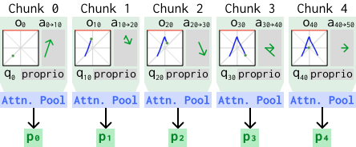
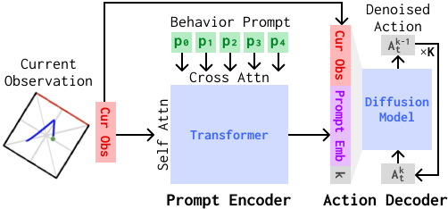
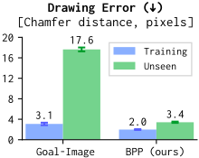
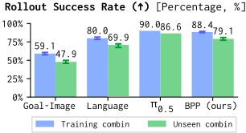
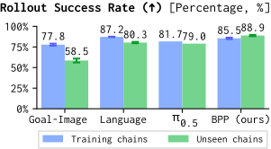
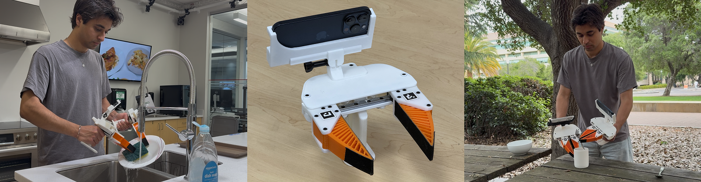

Behavior Prompting Policy
Demonstrations as Prompts for Manipulation
1Stanford University 2University of California, Berkeley
A user demonstrates a new drawing that the robot can then immediately execute (unseen during training).
We study behavior prompting, a paradigm that enables robots to perform new tasks at inference time given a single human demonstration, which we call a behavior prompt. To enable this capability, we present contributions in algorithm, data, and evaluation. For algorithm, we introduce Behavior Prompting Policy (BPP), an in-context visuomotor architecture that translates the behavior prompt and the current observation into robot actions. For data, we identify that task diversity is the primary driver of the prompting capability and introduce iPhUMI, a handheld manipulation interface for collecting diverse training data. For evaluation, we introduce DrawAnything and LIBERO-Gen to evaluate test-time adaptation to unseen drawing and tabletop manipulation tasks. We also demonstrate that iPhUMI serves as a practical interface for specifying behavior prompts at test time, enabling a human to command a robot via a single demonstration to complete known tasks or to define new robot capabilities. Altogether, behavior prompting provides a flexible and scalable way to teach robots new skills without fine-tuning.
A single demonstration of a desired task consisting of a sequence of observations, proprioception, and actions in the same sensorimotor space as the robot's execution. While language and goal images typically provide information about what task needs to be completed, behavior prompts additionally provide spatial and temporal information that inform the policy how to complete the task.

Behavior prompt from a human demo of drawing the letter A. The key idea is that a behavior prompt is simply a robot demonstration. The observation and proprioception are temporally downsampled, but the actions are included at full temporal resolution. We pool the features at each time chunk.
Putting a behavior prompt in the context of a visuomotor policy to condition execution. The prompt comes from the training dataset for known tasks or from a single human demonstration collected at test time for new tasks. The prompt is the task descriptor used instead of language or goal images.

Behavior Prompting Policy (BPP). BPP is an in-context visuomotor architecture that translates the behavior prompt and the current observation into closed-loop robot actions. It consists of a prompt encoder and an action decoder.
Yes, we introduce a set of laundry folding tasks to validate this.
Here a human commands the robot at test time through a single sweater folding demonstration (i.e., behavior prompt) collected with bimanual iPhUMI. The robot is trained on these three distinct folding tasks, and BPP successfully determines which training behavior to follow based on the behavior prompt.
Training tasks:
Yes, we introduce drawing and tabletop manipulation benchmarks to validate this. First we look at drawing.
At test time, the robot must replicate a novel drawing given a single human demo. Drawing is well suited for studying behavior prompting as it requires the policy to continuously reference the prompt to adapt its low-level actions. We find that BPP can succesfully recreate many new drawings given a single iPhUMI demo.
Tasks not seen during training:
To understand how BPP leverages the behavior prompt to adapt to new drawings, we visualize which parts of the prompt the policy focuses on during the rollout:
Tasks not seen during training:
Prompt attention follows task progression. The BPP prompt encoder is responsible for attending to relevant information from the human prompt (bottom) during policy rollout (top left). We visualize the attention scores for the prompt at each inference call throughout the rollout (top right). Rather than just looking the final goal state of the drawing, BPP learns how to follow the behavior prompt as a step-by-step guide. This is a form of dense subgoal conditioning that dramatically simplifies the adaptation problem.
This is one of simulation benchmarks we release to enable reproducible scientific study of behavior prompting. Here, the unseen drawings come from a human using a mouse. They are given to BPP as behavior prompts, but are shown below in red purely for reference; the red drawing is not visible to the policy. We find that BPP succesfully recreates many new drawings while a goal image policy cannot.
Tasks not seen during training:
Prompt attention follows task progression. The BPP prompt encoder is responsible for attending to relevant information from the human prompt (bottom) during policy rollout (top). We visualize the attention scores for the prompt at each inference call (bottom). Compared to goal image policy which can only look at the final drawing state, BPP learns to follow the behavior prompt as a step-by-step guide. This is a form of dense subgoal conditioning that dramatically simplifies the adaptation problem.

DrawAnything Sim results. While a goal image policy and BPP can both do well on training tasks, only BPP is able to adapt to unseen tasks. A full behavior prompt provides substantially more information about the desired task, which simplifies the adaptation problem.
We find that BPP improves adaptation to new instructions consisting of known manipulation primitives. We do not yet have evidence that BPP can enable one-shot execution of entirely new action primitives.
To study this, we create LIBERO-Gen, an extension to LIBERO that procedurally generates new environments, tasks, and demonstration data. Using this tool, we create two benchmarks, LIBERO-Gen Combination and LIBERO-Gen Chain, to evaluate test-time adaptation to new tasks. By new tasks we do not mean entirely new action primitives. Rather, our LIBERO-Gen benchmarks evaluate compositional instruction following for tasks consisting of known manipulation primitives.
We find that BPP improves adaptation in both LIBERO-Gen benchmarks compared to language conditioning or goal-image conditioning. On these benchmarks, despite not having pretraining, BPP performs comparably to a VLA model with foundation pretraining.
In this benchmark, we have one environment containing two identical bowls that are placed at varying initial locations in the scene. The policy is instructed to pick one of the two bowls and then place that bowl in an instructed target location. We train on many pick-place location combinations and evaluate on withheld pick-place combinations at test-time.
Dataset split:
Prompt attention follows key manipulation steps. We see that the BPP prompt encoder typically attends to the most relevant upcoming state; in this case that includes first identifying which of the two identicial bowls to pick and then where to place it.

LIBERO-Gen Combination results. On unseen pick-place combinations, BPP outperforms baselines using goal images or language instructions. Finetuning the π0.5 VLA model on the training combinations outperforms BPP in this experiment; we note that, unlike π0.5, BPP is trained from scratch without foundation-level pretraining.
In this benchmark, we have one environment and explore the set of possible two-step interactions. First step actions include opening top/middle drawer, pushing the plate, turning on the stove, and pick-place actions. Second step actions include pick-place actions. We evaluate a model's ability to sequentially execute two individually seen manipulation primitives that were never seen jointly.
Dataset split:
Prompt attention follows key manipulation steps. We see that the BPP prompt encoder typically attends to the most relevant upcoming state; this could include the next object to interact with, where to pick an object from, or where to place the currently held object.

LIBERO-Gen Chain results. On unseen chained tasks, BPP outperforms baselines using goal images or language instructions. For this experiment, desipte not having foundation-level pretraining, BPP outperforms a π0.5 VLA model finetuned on the training chains.

We introduce iPhUMI, a handheld data collection interface that extends the original UMI, to make it eaiser to collect diverse, multi-task datasets. It features an intuitive data collection app, real-time localization across different environments, diverse data streams (6DoF pose, narrow and ultrawide RGB, LiDAR depth, bimanual), is easily extensible, and is entirely open-source.
iPhUMI is also a hardware interface for behavior prompting, enabling wireless transfer of human demonstrations at test time to in-context condition prompting policies. During robot deployment, a user can quickly demonstrate a new task using iPhUMI that will immediately condition the robot execution.
No. Both have their respective merits. Behavior prompts are rich in spatial and temporal information that help simplify the test-time adaptation problem in particular domains, but they require a full demonstration for new tasks at test time. Language is easily expressed for many tasks (though hard for some tasks), but exists outside of the sensorimotor space of the robot. We envision a future policy that can flexibly leverage either type of task descriptor.
Behavior prompting is useful in multi-task settings when a task demonstration clarifies task-relevant information. An example is when the task distribution involves following spatial-temporal information (ex: step-by-step drawings). It is also useful when the tasks are more easily described through example than language (ex: the specific places to grasp a garment through multiple stages of a laundry folding task). It's also useful when a demonstration clarifies the manipulation strategy (ex: a particular way to grasp a bottle that makes it easier to put on a shelf). Even when goal image or language unambiguously define a new task, our empirical results find that using behavior prompting can improve adaptation to new tasks given one demonstration. You should not use behavior prompting if you have a small number of training tasks that are sufficiently described by language (see limitations section below).
Most likely. Since behavior prompts are exactly the same as demonstration data, you do not need to do any additional paired data collection or dataset preprocessing. This means that you can reuse your existing demonstration data as behavior prompts during training and deployment. You will need to indicate which demonstrations are not full task demonstrations, such as partial error recovery demonstrations, since we only want to prompt with full task demonstrations.
Demonstrations exist in the sensorimotor space of the robot, making them a natural choice for representing task-relevant information that the policy already has experience reasoning about. Using them sidesteps the need for mapping semantic language understanding into the sensorimotor space. They are also rich in temporal and spatial cues and don't require additional labeling or paired human-robot data collection.
The more inductive biases and priors you incorporate into your task representation, the less general it will be. Behavior prompts are quite general, meaning they can be broadly applied to many types of manipulation tasks. This generality does come at the cost of requiring high training task diversity; our bet is that the bitter lesson will favor a general prompt representation that scales with training data.
We hope that behavior prompting broadly enables a pathway for specifying human preferences to robots at test time via demonstration. We also envision behavior prompting as a means to adapt pretraining knowledge (i.e., large foundation behavior prompting model) to a new environment (e.g., a person's home) through a single demonstration for a target task; a demonstration provides rich information about the target environment and desired manipulation strategy that simplifies the adaptation problem.
Behavior prompts are most useful when the spatial and temporal information in the prompt provide additional task-relevent cues to the policy. But for our laundry folding experiment we only have three training tasks, the details of which can be directly memorized in the base model. Consequently, this extra information makes the behavior prompt a more indirect identifier of the desired folding task compared to a language command. We observe that this indirectness weakens the strength of the behavior prompt task conditioning in low task diversity scenarios. Below, we highlight cases where BPP completes the wrong task or hesitates about what task to do. We don't see these failure modes with language conditioning.
Failure cases:
We anticipate that behavior prompting would have substantial advantages over language conditioning if we trained on many folding strategies across many garmet types and then evaluated test-time adaptation to a new folding style or unseen garmet. In this case, a behavior prompt provides useful temporal cues about the folding steps and useful visual cues about interaction points on the new garmet. It's also more natural to describe these folding steps and spatial interaction points through a demonstration than with language.
1Stanford University 2University of California, Berkeley
@article{patel2026bpp,
title = {Behavior Prompting Policy: Demonstrations as Prompts for Manipulation},
author = {Patel, Austin and Pekarek, Ben and {Castro Hernandez}, Joel Enrique and Song, Shuran},
journal = {arXiv preprint},
year = {2026}
}